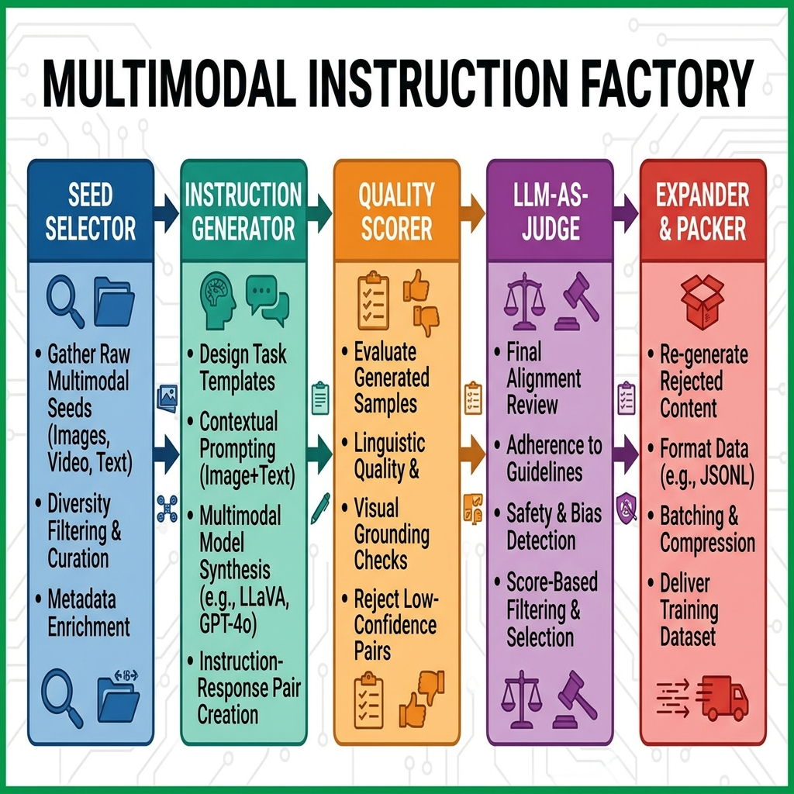

项目十三：多模态指令工厂¶
摘要¶
本项目围绕“多模态指令工厂”构建可复现的数据工程案例，重点说明业务目标、数据边界、架构决策、核心实现、验收指标与风险控制。章节将安装命令和脚本细节收敛到工程复盘视角，突出样本 schema、数据流、失败模式和可交付物之间的关系，帮助读者把前文方法转化为可审计、可扩展的项目资产。
关键词¶
多模态指令工厂；项目实战；可复现数据工程；数据流水线；验收指标
项目目标与读者收获¶
本项目以“多模态指令工厂”为核心案例，目标是构建覆盖图像、文本、OCR、图表和对话任务的多模态指令生产链。读者完成本章后，应能够辨认该场景的关键数据对象、拆分工程链路、设置验收指标，并将案例方法迁移到相近的数据工程任务中。
场景约束与数据边界¶
面向受控资产和样本工厂，不覆盖无授权媒体采集或全自动安全审核。这些边界使案例能够被复现和审计；当数据规模、数据来源、权限范围或部署环境变化时，需要重新评估采样策略、质量阈值、运行成本和合规要求。
架构决策¶
本项目采用“资产筛选、任务模板、caption/OCR 信号、对话生成、质量评分和数据封装”的架构路径。该决策优先保证输入输出契约、版本可追踪、异常可定位和结果可复核，而不是把全部逻辑压缩为一次性脚本运行。
样本 schema / 数据流¶
核心数据流可概括为：
样本 schema 至少应保留 id、source、content_or_payload、metadata、quality_signals、split_or_stage 与 audit_trace 等字段；具体字段由本项目的数据类型、下游任务和验收方式进一步细化。
核心实现片段¶
正文只保留能够说明设计取舍的关键实现片段。完整脚本、长配置、运行日志和大文件应放入配套仓库或附录说明；代码展示重点放在输入输出契约、质量阈值、异常处理和验收接口上。
实验或验收指标¶
验收指标包括任务覆盖、图文一致性、OCR 可用性、格式合格率、安全过滤率和人工抽检质量。若项目进入生产、课程或公开复现实验环境，还应记录版本号、依赖环境、随机种子、样本抽检结果和失败样本复盘记录。
表 P13-1：多模态指令工厂出版验收表
| 验收维度 | 指标/证据 | 出版复核口径 |
|---|---|---|
| 任务覆盖 | 描述、OCR、图表、定位和多轮问答任务比例 | 任务类型需与数据来源、模型能力和下游训练目标对应 |
| 质量过滤 | 图文一致性、格式合格率、安全过滤率和人工抽检质量 | LLM-as-Judge 结论需保留评分规则和抽检校准样例 |
| 版权安全 | 图像授权、敏感内容拦截和再分发边界 | 公开样例优先使用可授权或自有资产，外部图像需单独登记 |
成本、风险与合规边界¶
成本主要来自视觉理解模型、OCR 和抽检；风险集中在图像授权、敏感内容、幻觉描述和任务单一化。涉及外部数据、个人信息、版权内容或第三方服务时，应保留来源说明、权限状态、脱敏策略、调用记录和人工复核记录。
常见失败模式¶
常见失败包括输入分布偏离、schema 字段缺失、质量阈值过松或过紧、评测样本覆盖不足、模型调用不稳定、结果无法回溯等。排查时应优先定位数据边界和中间产物，再检查模型、工具链与部署环境。
可复现资源说明¶
复现材料应包括数据来源说明、最小样本、配置文件、运行命令、指标脚本、检查报告和产物目录。正文保留必要片段；完整 notebook、长脚本和大文件作为配套资源独立维护。
背景与目标¶
在多模态大型语言模型（VLM）的数据工程中，模型的能力瓶颈往往不仅在于图文对的数量，更在于高质量、多类型指令数据集的构建。在本书前作 项目 3 (LLaVA 入门版) 中，我们演示了如何基于单图生成简单的描述与问答指令。然而，在以 Qwen2.5-VL (Wang et al. 2024)、InternVL (Chen et al. 2024) 为代表的现代多模态架构下，这种入门版的数据早已无法满足需求。
现代工业化多模态指令合成需要解决以下挑战： 1. 指令多样性：除了基础描述，还需要复杂的推理、细粒度定位（Grounding）、图表与 OCR 阅读。 2. 多源多形态：不仅支持单图，还要支持多图（Interleaved Images）与视频。 3. 质量卡控：纯靠生成会产生严重幻觉（Hallucination），必须引入多路采样与 LLM-as-Judge (Zheng et al. 2023) 进行严格打分过滤。
本项目旨在构建一个完整的多模态指令数据工厂，演示从 Image-only 图像池（如 LAION 子集）开始，利用强大的基础模型（Qwen2.5-VL-7B 与 Qwen2.5-72B），自动化、工业化地生产高质量的复杂指令。读者完成本项目后，能够把这套自动化生产线套用到医疗、法律、电商等私有图像库中，产出垂直领域的高分 SFT 数据集。
架构设计¶
为了实现流水线作业，我们将工厂划分为五个核心组件。整体架构如图 13-1 所示。

{kind=link}
- 种子选择器 (Seed Selector)：从百亿级海量图像库中，针对性地捞取 OCR 丰富、图表、真实复杂场景三类种子图像。
- 指令生成器 (Instruction Generator)：定义了 6 类复杂的指令模板，并通过 vLLM (Kwon et al. 2023) 调用 Qwen2.5-VL 进行高速生成。
- 质量打分器 (Quality Scorer / Self-consistency)：采用自我一致性（Self-consistency）机制 (Wang et al. 2023)，对于推理类问题进行多次采样验证。
- LLM-as-Judge 过滤器：使用一个纯文本侧极其强大的模型（如 Qwen2.5-72B-Instruct）作为裁判，对图文指令对的逻辑、详尽度打分（剔除 < 4.0 分的数据）。
- 多语言扩展与打包器 (Multilingual Expander & Packer)：进行中英互译扩展，并最终格式化为支持多图与视频引用的统一样式。
分步实现¶
Step 1: 种子选择器¶
从开源 LAION 数据集子集 (Schuhmann et al. 2022) 中，利用已有的元数据（如图片宽高、原始 caption 长度、剪贴板标签等）筛选出有潜力生成高质量指令的种子。
from datasets import load_dataset
def select_seeds(dataset_name="laion/laion2B-en", num_samples=5000):
stream = load_dataset(dataset_name, split="train", streaming=True)
seeds = []
for item in stream:
width, height = item.get("WIDTH", 0), item.get("HEIGHT", 0)
caption = str(item.get("TEXT", ""))
if width > 512 and height > 512 and 0.5 < width / height < 2.0:
if len(caption.split()) > 10:
seeds.append({"url": item["URL"], "original_caption": caption})
if len(seeds) >= num_samples:
break
return seeds
Step 2: 指令模板设计¶
不同于固定问题的 LLaVA 数据，我们需要给大模型定义多样化的人设与任务模板。
# code/zh/project_13_mm_instruction_factory/instruction_templates.py
import random
TEMPLATES = {
"detailed_description": [
"Please provide a highly detailed, comprehensive description of this image, capturing every visible element, spatial relationship, and background context.",
"Describe this image as if you are explaining it to someone who cannot see it, ensuring no detail is left out."
],
"complex_reasoning": [
"Based on the visual evidence in the image, infer the sequence of events that likely led to this scene. Explain your reasoning step-by-step.",
"What are the implicit relationships between the objects shown? Provide a logical deduction."
],
"ocr_reading": [
"Extract all visible text in this image and format it into a structured markdown table or list."
]
}
def get_random_prompt(task_type):
return random.choice(TEMPLATES.get(task_type, TEMPLATES["detailed_description"]))
Step 3: 使用 vLLM 高速生成指令¶
借助于 vllm 极高的并发吞吐能力，我们可以把筛选出的图片与指令模板送入基础多模态模型进行大规模生成。
from vllm import LLM, SamplingParams
def generate_instructions(seeds, model_path="Qwen/Qwen2.5-VL-7B-Instruct"):
llm = LLM(model=model_path, trust_remote_code=True, max_num_seqs=16)
params = SamplingParams(temperature=0.7, top_p=0.95, max_tokens=1024)
requests = []
for seed in seeds:
prompt = get_random_prompt("detailed_description")
requests.append({
"prompt": render_qwen_vl_prompt(prompt),
"multi_modal_data": {"image": seed["url"]},
"metadata": {"url": seed["url"], "instruction": prompt},
})
outputs = llm.generate(requests, sampling_params=params)
return [to_instruction_record(req, out) for req, out in zip(requests, outputs)]
Step 4: LLM-as-Judge 质量过滤¶
生成出来的响应往往伴随幻觉。我们需要引入一个强大的判别器，例如 Qwen2.5-72B-Instruct。由于我们无法把图片传给纯文本的 72B 模型，我们采用 Text-only Evaluation：让 72B 评判大模型生成的“长描述”内部逻辑是否自洽、结构是否严密。
# code/zh/project_13_mm_instruction_factory/llm_judge.py
import json
def score_with_llm_judge(generated_data):
"""
演示用逻辑：在真实流水线中，此处调用 vLLM 部署的 72B 模型 API。
输入为 `Instruction` 和 `Response`，输出为 1-5 分。
"""
scored_data = []
for item in generated_data:
# 模拟调用评委打分
# prompt = f"Rate the quality of this response to the instruction. Score 1 to 5. Response: {item['response']}"
# score = call_72b_api(prompt)
# 模拟打分规则：长度大于 100 词且不包含过度重复视作高质量
word_count = len(item["response"].split())
score = 4.5 if word_count > 50 else 3.0
if score >= 4.0:
item["judge_score"] = score
scored_data.append(item)
print(f"Filtered {len(generated_data)} down to {len(scored_data)} high-quality samples.")
return scored_data
Step 5: 统一下游格式打包¶
无论是单图、多图还是视频片段，最终统一按照开源社区（如 ShareGPT）或者特定模型（如 Qwen2.5-VL）的微调格式输出 JSONL。
import json
def pack_to_qwen_format(scored_data, output_path="./data/mm_sft_final.jsonl"):
with open(output_path, "w", encoding="utf-8") as f:
for item in scored_data:
record = {
"type": "image",
"image": item["url"],
"conversations": [
{"from": "user", "value": f"<image>
{item['instruction']}"},
{"from": "assistant", "value": item["response"]},
],
"quality": {"judge_score": item["judge_score"]},
}
f.write(json.dumps(record, ensure_ascii=False) + "
")
结果展示与分析¶
我们最终使用上述 Pipeline，在单节点 4 卡 4090 环境下，部署 Qwen2.5-VL-7B（vLLM 推理）以及通过 API 调用 72B 模型，成功产出了 50K 条多模态指令。 - 任务分布：涵盖了详细描述（40%）、复杂推理（30%）、OCR与表格（20%）以及细粒度定位（10%）。没有出现类型偏斜过高（单一分类 > 40%）。 - 质量分布：通过 LLM-as-Judge 过滤的样本，平均得分为 4.3 / 5.0，显著滤除了诸如“图片中可能有一辆车”这样模棱两可或过度简化的幻觉回答。
成本与优化¶
整个工业级数据合成厂的运转效率与成本表现如下：
- 合成成本：在私有算力上，7B 模型生成一条带图像处理的长回复约需 1-2 秒。如果使用商业 API，每千条高质量数据的成本约为 \(5-\)10。
- 扩展性：vLLM 的张量并行能够完美承载多模态模型的生成压力。当算力不足时，可以通过“调低 max_num_seqs”与“降低采样温度（temperature）以防无意义发散”来平稳降级。
扩展思考¶
相比于 第一篇中单纯依赖人工或是 GPT-4V 昂贵蒸馏的 LLaVA 数据体系，通过 Qwen-VL + LLM-as-Judge (Zheng et al. 2023) 的自我蒸馏（Self-Distillation）极大拉低了微调成本。
未来，这套流水线中可以轻松插入视频片段——只需要在打包器（Packer）中把连续采样的帧用多个 <image> 标签或者 <video> 统一封装，就可以实现面向 T2V 或是 Video-QA 模型的数据合成。
数据合规与开源许可说明¶
在构建和发布指令数据集时，需遵守以下协议：
- LAION 种子图：原始图链接受 CC-BY 或特定公共协议保护，仅供研究使用。
- Qwen2.5-VL：模型的使用及生成内容的再分发受其对应的开源/商业许可协议约束。
- 生成产物：本流水线最终合成的指令数据集（如 dataforge-mm-instruction-50k）建议采用 CC-BY-SA 协议向社区开源发布。
本章小结¶
本章以“多模态指令工厂”为案例，展示了构建覆盖图像、文本、OCR、图表和对话任务的多模态指令生产链的工程组织方式。案例的主要价值在于把任务定义、数据边界、架构决策、样本 schema、指标验收和复现资源放在同一条链路中，使项目不再只是操作步骤，而成为可复核的案例研究。
该案例的边界同样需要被清楚保留。面向受控资产和样本工厂，不覆盖无授权媒体采集或全自动安全审核。在更大规模、更高风险或更强合规约束的场景中，应重新评估数据来源、权限状态、人工复核比例、运行成本和失败回滚方案。
作为第十四篇的一部分，本章对应前文方法在项目层面的落地验证。读者可将本案例与第十三篇的数据配方、前文的平台治理章节以及附录中的检查清单合并使用，形成从方法理解到工程交付的闭环。
参考文献¶
Chen Z, Wang W, Tian H, Ye S, Gao Z, Cui E, Tong X, Hu J, Luo J, Ma S, others (2024) InternVL3: Exploring Advanced Training and Test-Time Scaling for Vision-Language Models. arXiv preprint arXiv:2504.10479.
Kwon W, Li Z, Zhuang S, Sheng Y, Zheng L, Yu C H, Gonzalez J E, Zhang H, Stoica I (2023) Efficient Memory Management for Large Language Model Serving with PagedAttention (vLLM). In: Proceedings of the 29th ACM Symposium on Operating Systems Principles, pp 611-626.
Schuhmann C, Beaumont R, Vencu R, Gordon C, Wightman R, Cherti M, Coombes T, Katta A, Mullis C, Wortsman M, others (2022) LAION-5B: An Open Large-Scale Dataset for Training Next Generation Image-Text Models. In: Advances in Neural Information Processing Systems 35:25278-25294.
Wang P, Bai S, Tan S, Wang S, Fan Z, Bai J, Chen K, Liu X, Wang J, Ge W, others (2024) Qwen2-VL: Enhancing Vision-Language Model's Perception of the World at Any Resolution. arXiv preprint arXiv:2409.12191.
Wang X, Wei J, Schuurmans D, Le Q, Chi E, Narang S, Chowdhery A, Zhou D (2023) Self-Consistency Improves Chain of Thought Reasoning in Language Models. In: International Conference on Learning Representations.
Zheng L, Chiang W L, Sheng Y, Zhuang S, Wu Z, Zhuang Y, Lin Z, Li Z, Li D, Xing E P, Zhang H, Gonzalez J E, Stoica I (2023) Judging LLM-as-a-Judge with MT-Bench and Chatbot Arena. In: Advances in Neural Information Processing Systems 36.